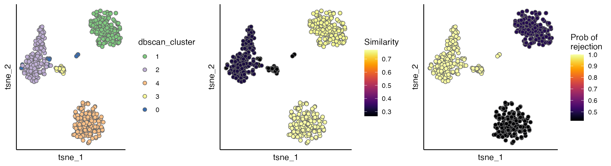
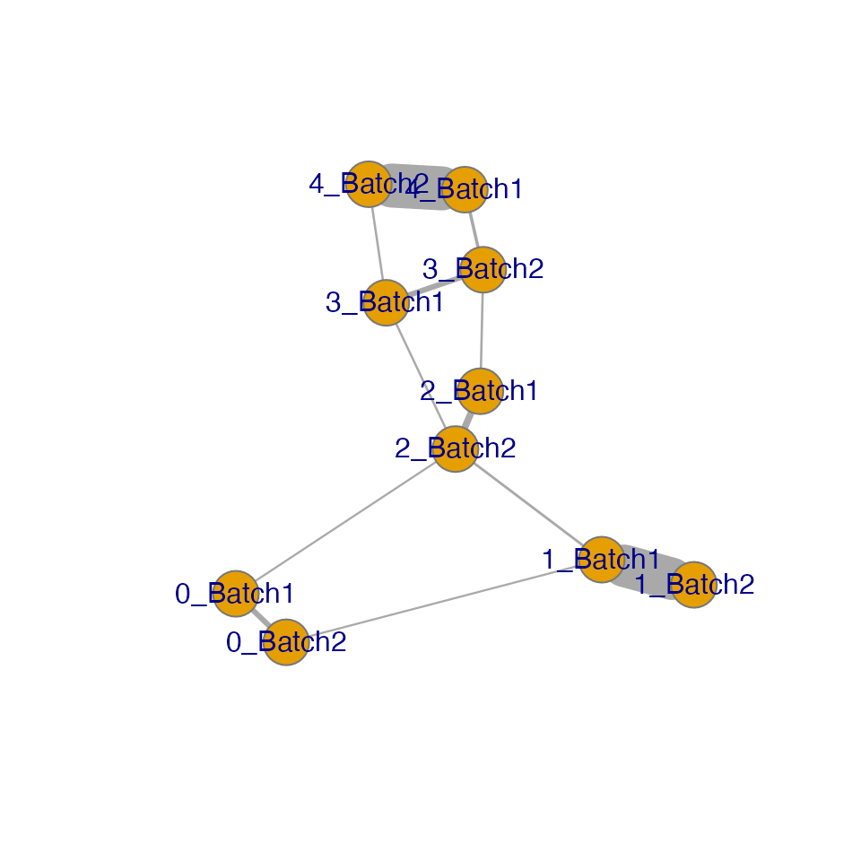
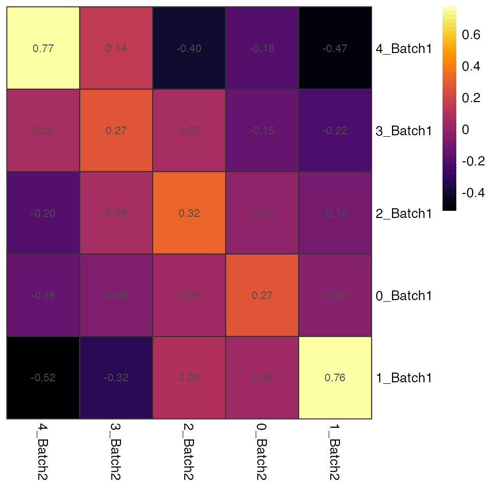
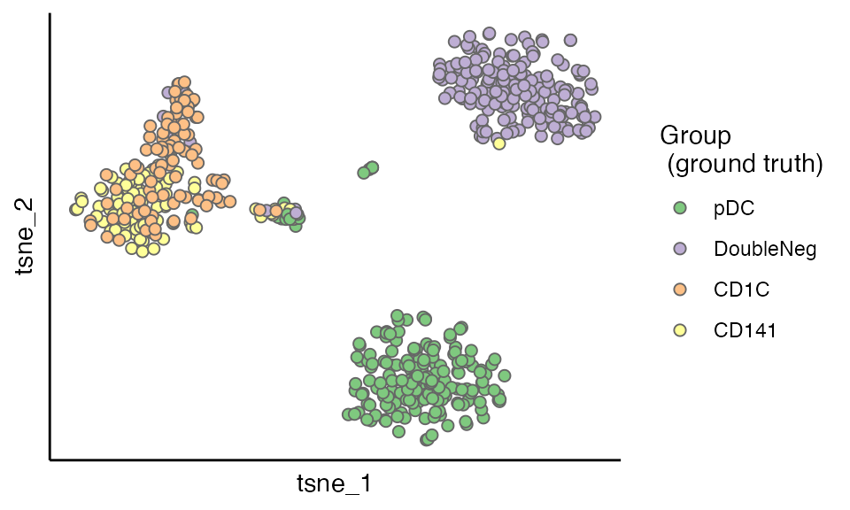

Why Evaluate Integration?
Single-cell RNA-seq integration methods aim to remove technical batch effects while preserving biological variation. CIDER provides a ground-truth-free approach to:
- Identify well-integrated cell populations
- Detect potentially incorrect integrations
- Quantify integration confidence through empirical p-values
This vignette focuses how showing the process using the example data of dendritic cells.
Load dendritic data
The example data can be downloaded from https://figshare.com/s/d5474749ca8c711cc205. This dataset contains 26593 genes and 564 cells across 2 batches.
load("../data/dendritic.rda")
dendritic <- CreateSeuratObject(counts = dendritic@assays$RNA@counts, meta.data = dendritic@meta.data)
# Verify batch composition
table(dendritic$Batch)
#>
#> Batch1 Batch2
#> 281 283Perform integration with Seurat
First an integration
method
is applied on the dendritic data. You can apply other integration
methods to the your data, as long as the correct PCs are stored in your
Seurat object, i.e. Reductions(seu.integrated, "pca") or
seu.integrated@reductions$pca.
seu.list <- SplitObject(dendritic, split.by = "Batch")
for (i in 1:length(seu.list)) {
seu.list[[i]] <- NormalizeData(seu.list[[i]], verbose = FALSE)
seu.list[[i]] <- FindVariableFeatures(seu.list[[i]],
selection.method = "vst",
nfeatures = 1000, verbose = FALSE)
}
seu.anchors <- FindIntegrationAnchors(object.list = seu.list,
dims = 1:15, verbose = FALSE)
seu.integrated <- IntegrateData(anchorset = seu.anchors,
dims = 1:15, verbose = FALSE)
DefaultAssay(seu.integrated) <- "integrated"
seu.integrated <- ScaleData(seu.integrated, verbose = FALSE)
seu.integrated <- RunPCA(seu.integrated, verbose = FALSE)
seu.integrated <- RunTSNE(seu.integrated, reduction = "pca", dims = 1:5)Clear the intermediate outcome.
CIDER Evaluation Workflow
CIDER evaluates integration results in three steps.
Step 1: Density-Based Clustering
Clustering based on the corrected PCs (hdbscan.seurat).
This step uses HDBSCAN, which is a density-based clustering
algorithm.
The clustering results are stored in
seu.integrated$dbscan_cluster. Clusters are further divided
into batch-specific clusters by concatenating dbscan_cluster and batch,
stored in seu.integrated$initial_cluster.
seu.integrated <- hdbscan.seurat(seu.integrated)Step 2: Calculate Cluster Similarities
Compute IDER-based similarity matrix (getIDEr) among the
batch-specific initial clusters. If multiple CPUs are availble, you can
set use.parallel = TRUE and n.cores to the
number of available cores to speed it up.
ider <- getIDEr(seu.integrated, use.parallel = FALSE, verbose = FALSE)Step 3: Compute Integration Confidence
Assign the similarity and estimate empirical p values
(estimateProb) for the correctness of integration. High
similarity values and low p values indicate that the cell are similar to
the surrounding cells and likely integrated correctly.
seu.integrated <- estimateProb(seu.integrated, ider)Visual Evaluation
Evaluation scores
The evaluation scores can be viewed by the scatterPlot
as below. As shown cells with dbscan_cluster of 2 and 3 have low
regional similarity and high empirical p values, suggesting that they
can be incorrectly integrated.
p1 <- scatterPlot(seu.integrated, "tsne", "dbscan_cluster")
p2 <- scatterPlot(seu.integrated, "tsne", colour.by = "similarity") + labs(fill = "Similarity")
p3 <- scatterPlot(seu.integrated, "tsne", colour.by = "pvalue") + labs(fill = "Prob of \nrejection")
plot_grid(p1, p2, p3, ncol = 3)
Interpretation Guide:
✅ High similarity + Low p-value: Well-integrated regions
❌ Low similarity + High p-value: Potential integration errors
The IDER-based Similarity Network
To have more insight, we can view the IDER-based similarity matrix by
functions plotNetwork or plotHeatmap. Both of
them require the input of a Seurat object and the output of
getIDEr. In this example, 1_Batch1 and 1_Batch2 as well as
4_Batch1 and 4_Batch2 have high similarity.
plotNetwork generates a graph where vertexes are initial
clusters and edge widths are similarity values. The parameter
weight.factor controls the scale of edge widths; larger
weight.factor will give bolder edges proportionally.
plotNetwork(seu.integrated, ider, weight.factor = 3)
#> IGRAPH 00150e7 UNW- 10 12 --
#> + attr: name (v/c), frame.color (v/c), size (v/n), label.family (v/c),
#> | weight (e/n), width (e/n)
#> + edges from 00150e7 (vertex names):
#> [1] 4_Batch1--4_Batch2 4_Batch1--3_Batch2 3_Batch1--4_Batch2 3_Batch1--3_Batch2
#> [5] 3_Batch1--2_Batch2 2_Batch1--3_Batch2 2_Batch1--2_Batch2 0_Batch1--0_Batch2
#> [9] 0_Batch1--2_Batch2 1_Batch1--0_Batch2 1_Batch1--1_Batch2 1_Batch1--2_Batch2Cluster Similarity Heatmap
plotHeatmap generates a heatmap where each cell is
coloured and labeled by the similarity values.
plotHeatmap(seu.integrated, ider)
Validation Against Ground Truth Annotation
So far the evaluation have completed and CIDER has not used the ground truth at all!
Let’s peep at the ground truth before the closure of this vignette. As shown in the figure below, the clusters having low IDER-based similarity and high p values actually have at least two populations (CD1C and CD141), verifying that CIDER spots the wrongly integrated cells.
scatterPlot(seu.integrated, "tsne", colour.by = "Group") + labs(fill = "Group\n (ground truth)")
Best Practices
- Parameter Tuning:
- Adjust
hdbscan.seuratparameters if initial clustering is too granular - Modify
cutree.hinestimateProbto change confidence thresholds
- Interpretation Tips:
- Always validate suspicious joint clusters with marker genes
- Scalability:
- For large datasets (>10k cells), enable parallel processing with
use.parallel=TRUE
Reproducibility
sessionInfo()
#> R version 4.4.1 (2024-06-14)
#> Platform: x86_64-apple-darwin20
#> Running under: macOS Monterey 12.5.1
#>
#> Matrix products: default
#> BLAS: /Library/Frameworks/R.framework/Versions/4.4-x86_64/Resources/lib/libRblas.0.dylib
#> LAPACK: /Library/Frameworks/R.framework/Versions/4.4-x86_64/Resources/lib/libRlapack.dylib; LAPACK version 3.12.0
#>
#> locale:
#> [1] en_US.UTF-8/en_US.UTF-8/en_US.UTF-8/C/en_US.UTF-8/en_US.UTF-8
#>
#> time zone: Europe/London
#> tzcode source: internal
#>
#> attached base packages:
#> [1] stats graphics grDevices utils datasets methods base
#>
#> other attached packages:
#> [1] ggplot2_3.5.1 cowplot_1.1.3 Seurat_5.1.0 SeuratObject_5.0.2
#> [5] sp_2.1-4 CIDER_0.99.2
#>
#> loaded via a namespace (and not attached):
#> [1] RColorBrewer_1.1-3 rstudioapi_0.16.0 jsonlite_1.8.8
#> [4] magrittr_2.0.3 spatstat.utils_3.1-0 farver_2.1.2
#> [7] rmarkdown_2.27 fs_1.6.4 ragg_1.3.2
#> [10] vctrs_0.6.5 ROCR_1.0-11 spatstat.explore_3.3-2
#> [13] htmltools_0.5.8.1 sass_0.4.9 sctransform_0.4.1
#> [16] parallelly_1.38.0 KernSmooth_2.23-24 bslib_0.7.0
#> [19] htmlwidgets_1.6.4 desc_1.4.3 ica_1.0-3
#> [22] plyr_1.8.9 plotly_4.10.4 zoo_1.8-12
#> [25] cachem_1.1.0 igraph_2.0.3 mime_0.12
#> [28] lifecycle_1.0.4 iterators_1.0.14 pkgconfig_2.0.3
#> [31] Matrix_1.7-0 R6_2.5.1 fastmap_1.2.0
#> [34] fitdistrplus_1.2-1 future_1.34.0 shiny_1.9.1
#> [37] digest_0.6.37 colorspace_2.1-1 patchwork_1.2.0
#> [40] tensor_1.5 RSpectra_0.16-2 irlba_2.3.5.1
#> [43] textshaping_0.4.0 labeling_0.4.3 progressr_0.14.0
#> [46] fansi_1.0.6 spatstat.sparse_3.1-0 httr_1.4.7
#> [49] polyclip_1.10-7 abind_1.4-5 compiler_4.4.1
#> [52] withr_3.0.1 doParallel_1.0.17 viridis_0.6.5
#> [55] fastDummies_1.7.4 highr_0.11 MASS_7.3-61
#> [58] tools_4.4.1 lmtest_0.9-40 httpuv_1.6.15
#> [61] future.apply_1.11.2 goftest_1.2-3 glue_1.7.0
#> [64] dbscan_1.2.2 nlme_3.1-165 promises_1.3.0
#> [67] grid_4.4.1 Rtsne_0.17 cluster_2.1.6
#> [70] reshape2_1.4.4 generics_0.1.3 gtable_0.3.5
#> [73] spatstat.data_3.1-2 tidyr_1.3.1 data.table_1.16.0
#> [76] utf8_1.2.4 spatstat.geom_3.3-2 RcppAnnoy_0.0.22
#> [79] ggrepel_0.9.5 RANN_2.6.2 foreach_1.5.2
#> [82] pillar_1.9.0 stringr_1.5.1 limma_3.60.6
#> [85] spam_2.10-0 RcppHNSW_0.6.0 later_1.3.2
#> [88] splines_4.4.1 dplyr_1.1.4 lattice_0.22-6
#> [91] survival_3.7-0 deldir_2.0-4 tidyselect_1.2.1
#> [94] locfit_1.5-9.10 miniUI_0.1.1.1 pbapply_1.7-2
#> [97] knitr_1.48 gridExtra_2.3 edgeR_4.2.2
#> [100] scattermore_1.2 xfun_0.46 statmod_1.5.0
#> [103] matrixStats_1.4.1 pheatmap_1.0.12 stringi_1.8.4
#> [106] lazyeval_0.2.2 yaml_2.3.10 evaluate_0.24.0
#> [109] codetools_0.2-20 kernlab_0.9-33 tibble_3.2.1
#> [112] cli_3.6.3 uwot_0.2.2 xtable_1.8-4
#> [115] reticulate_1.39.0 systemfonts_1.1.0 munsell_0.5.1
#> [118] jquerylib_0.1.4 Rcpp_1.0.13 globals_0.16.3
#> [121] spatstat.random_3.3-1 png_0.1-8 spatstat.univar_3.0-1
#> [124] parallel_4.4.1 pkgdown_2.1.0 dotCall64_1.1-1
#> [127] listenv_0.9.1 viridisLite_0.4.2 scales_1.3.0
#> [130] ggridges_0.5.6 leiden_0.4.3.1 purrr_1.0.2
#> [133] rlang_1.1.4References
- Stuart and Butler et al. Comprehensive Integration of Single-Cell Data. Cell (2019).
- Campello, Ricardo JGB, Davoud Moulavi, and Jörg Sander. “Density-based clustering based on hierarchical density estimates.” Pacific-Asia conference on knowledge discovery and data mining. Springer, Berlin, Heidelberg, 2013.